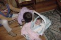
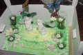
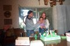

| me and Kelli on the big day...just before everyone arrived. | |
 |
This is me checking out my new cousin. Someday we will hopefully be close freinds. |
 |
My beautiful cake. |
 |
Me and my family. Daddy's making me do the fish face. |
| Look's delicious | |
| Lighting the candle. | |
| So, mom's b-day is the 31st of march. When Cherie, missy's mom was pregnant, she found out that missy was to be born on mom's b-day. She was born on the 28th. Then mom got pregnant with me, and found out I was to be born on my aunt missy's b-day, the 28th. I was born four days early. | |
| I sure do love this lollipop. | |
| The one on the right is daddy's cousin's husband, the one in the middle is daddy's other cousin (he's the dance superstar), and the one on the left is daddy's uncle. | |
| Some of charlie's friends came. This is Mark, Adrienne and Francis. | |
| Tia Lizzy just spoils me rotten. | |
| Tia Lizzy's helping me beat this pinata down. | |
| Daddy's Cousin's son lloks like he is just having a blast. | |
| Daddy's new love. | |
| DO you like uncle Rudy's new hat? It's a piece of the pinata. | |
| I'm ready for bed now, but we're just playing a little bedtime game with one of Rudy's freinds and Uncle Russ. | |
| The game was called "kick the ballon." | |
| Nighty-night CD mixer! |